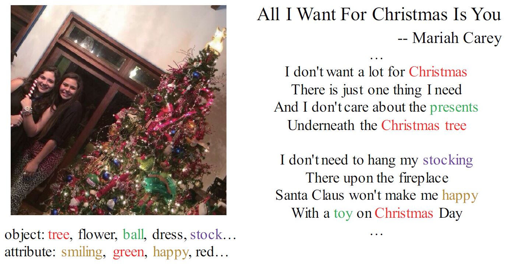
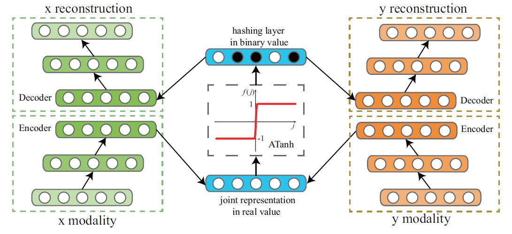
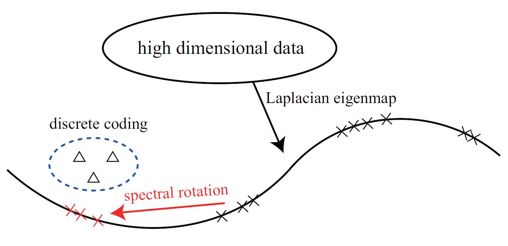
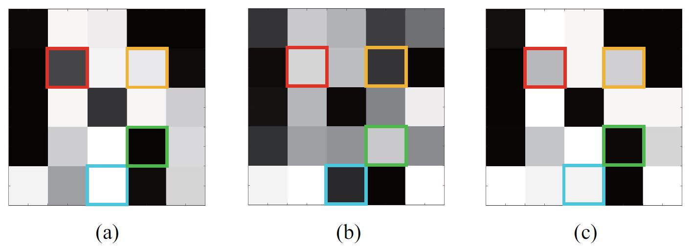
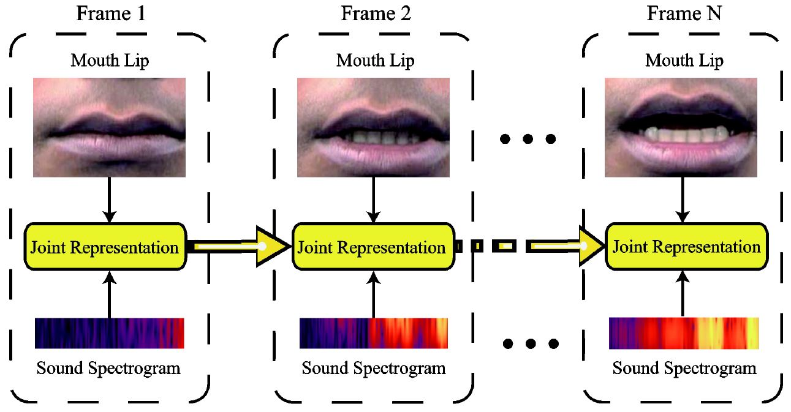
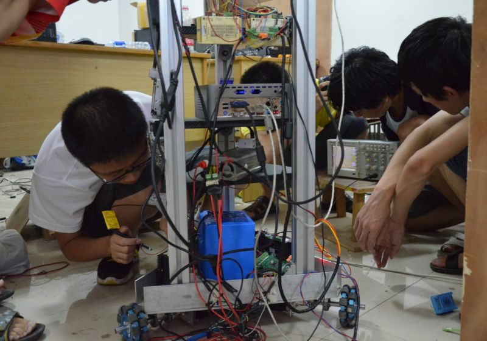
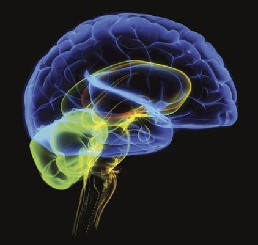

|
Di Hu Please turn on JavaScript to view email address. Ph.D. Student at OPTIMAL, NWPU |
I'm currently a third-year PhD candidate at OPTIMAL, supervised by Xuelong Li, Xiaoqiang Lu, and Feiping Nie. I mainly focus on machine learning, multimodal learning, and relevant applications.
Publications:
|  |
Xuelong Li, Di Hu, Xiaoqiang Lu. Image2song: Song Retrieval via Bridging Image Content and Lyric Words ICCV 2017. Paper Supplemental Material Video Dataset BibTex |
|  |
Xuelong Li, Di Hu, Feiping Nie. Deep Binary Reconstruction for Cross-modal Hashing ACM MM 2017. Poster presentation. Paper Code BibTex |
|  |
Xuelong Li, Di Hu, Feiping Nie. Large Graph Hashing with Spectral Rotation AAAI 2017. Poster presentation. Paper Code BibTex |
|  |
Di Hu, Xiaoqiang Lu, Xuelong Li. Multimodal Learning via Exploring Deep Semantic Similarity ACM MM 2016. Poster presentation. Paper Supplemental Material Dataset BibTex |
|  |
Di Hu, Xuelong Li, Xiaoqiang Lu. Temporal Multimodal Learning in Audiovisual Speech Recognition CVPR 2016. Poster presentation. Paper Dataset BibTex |
Reviewer:
|
AAAI 2018, CVPR 2018 |
Experience:
|  |
During the undergraduate studies, we developed a home-service robot based on ROS, which is named as XiaoMeng. I mainly focused on the robot configuration and human-computer interface, including face detection, face recognition, and TTS. I also participated in the SLAM work for the robot. And our team won the Second Prize for Home service robot group of RoboCup China Robot Competition in 2013. |
|  |
I'm very curious about the cognition of human, therefore I have ever spent one year studying cognitive science and cognitive psychology, advised by Xiaolin Zhou. And most of my works are inspired by them. |